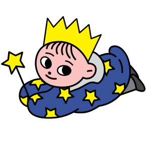
영어문해력 키우려면 다독&정독이 필수!
둘 다 잡는 건 오직
리딩게이트 뿐!
3,000권 eBook으로 다독을 제대로
수준별 독후프로그램으로 정독을 제대로
다
독
,
어
떻
게
제
대
로
하
나
요
?
수준에 맞는 영어책을
원어민의 소리로 듣기도 하고
혼자 소리내어 읽어보기도 해야합니다.
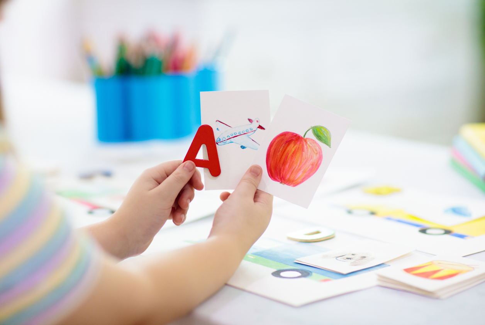
수준이 중요한 이유!
초등1학년인데 돌잡이책을 읽으면 아이에게 도움이 될까요?
혹은 너무 어려워서 한 줄 읽는 것도 벅차다면 어떨까요?
아이가 노력을 하면 읽어낼 수 있는 정도의,
수준에 맞는 도서를 많이 읽을 때 다독의 의미가 있습니다.
원어민의 소리가 필요한 이유!
언어 습득에서 많은 노출은 필수입니다.
하지만 한국에서 많은 노출이 어렵습니다.
부모님이 영어책을 읽어주기에도 어려움이 있습니다.
그래서 원어민 음성이 지원되는 eBook으로
영어 input을 쌓아야 합니다.
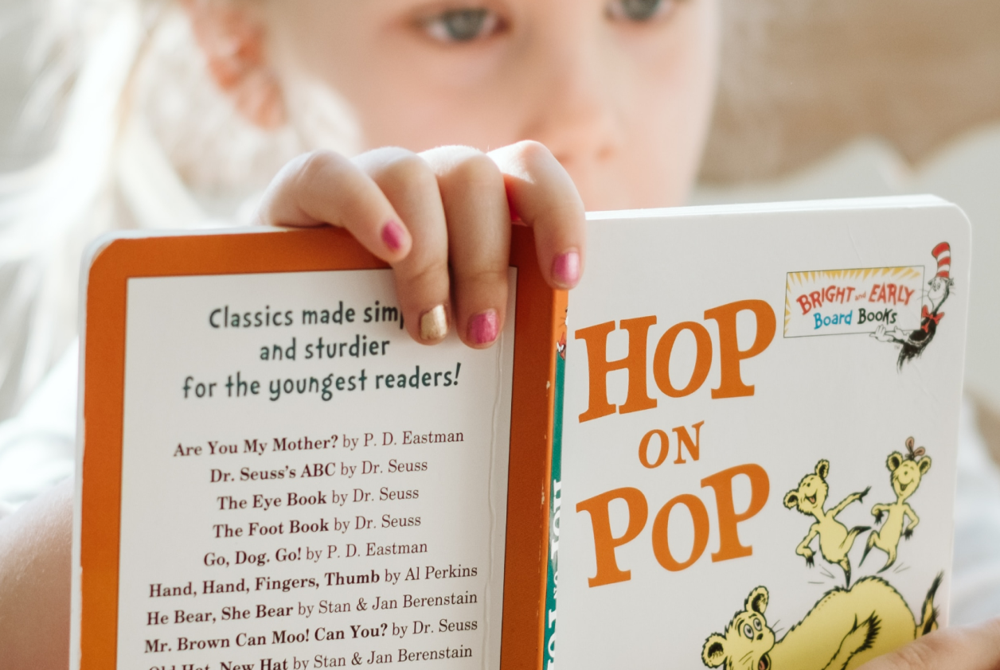
소리 내는 것이 필요한 이유!
영어 input을 쌓고 파닉스를 완성했다면 혼자 읽기도 해야 합니다.
자신의 속도에 맞추어 입 밖으로 내뱉으며
머릿속으로 구조화하면서 의미를 이해하는 훈련이 필요합니다.
리딩게이트는 약 3,000편 eBook을 22레벨로 수준을 세분화 하였으며
원어민 음성 지원, 혼자읽기 모드를 제공합니다.
즉, 다독을 제대로 하기 위한 모든 기능을 갖추었습니다.
정
독
,
어
떻
게
제
대
로
하
나
요
?
글의 맥락과 핵심을 파악하는 것이 정독입니다.
어럽겠지요?
그래서 노력이 필요하고, 훈련이 필요하며, 프로그램이 필요합니다.
맥락을 파악하는 훈련
영어책을 볼 때 모르는 단어를 필연적으로 만나게 됩니다.
이 때 당황하지 않고, 그림과 스토리를 통해 유추한 후
자신이 이해한 맥락이 맞는지
단어학습과 읽기 이해도 점검 퀴즈로 확인하는 과정이 필요합니다

핵심을 파악하는 능력
글을 읽을 때 건성으로 읽지 않고 인과관계를 파악하고
스토리의 흐름을 이해하며 읽어야 핵심을 파악할 수 있습니다.
이를 위해서는 요약하기 문제를 꾸준히 풀이하며,
긴 글을 구조화하는 훈련이 필요합니다.
노력이 필요
이 모든 과정은 그냥 눈으로 훑어 읽는 것이 아니기에 힘이
듭니다.
하지만 반드시 거쳐야 하는 과정이기에, 체계적인 문제 시스템과
포인트, 선물 등 보상이 필요합니다.
리딩게이트는, 듣기, 독해, 요약, 쓰기, 단어 등 체계적 독후프로그램을
제공하고 있으며
70점 이상 받으면 포인트를 주고, 이 포인트로 영어독서왕 선발대회
선물을 수여합니다.
즉, 정독을 제대로 하기 위한 모든 기능을 갖추었습니다.
다
독
과
정
독
모
두
를
갖
춘
유
일
무
이
영
어
독
서
리딩게이트 서비스 구성
다독을 위한
컨텐츠
- 원어민 음성이 지원되는
- 22단계 eBook 약 3,000권
- 파닉스를 재밌게 학습할 수 있는
- 도도 ABC 콘텐츠 약 300편
정독을 위한
독후활동
- eBook 이해도 점검이 가능한
- 수준별 독후 프로그램
- 해외유명 원서 3,000권에 대한
- pBook Quiz
끝까지 책임지는
케어
- 레벨테스트, 주간/월간 리포트 등
- 학습케어 기능
다독을 위한 컨텐츠
영어권 기준
유치원 이전 ~ 초등6학년
총 21단계 구성
다양한 해외 출판사와 협업으로
다양한 주제,
스토리라인,그림체로
끝없는 흥미 유발
세계명작, 창작 등 문학 외에
동물, 역사, IT 등
비문학까지
독서편식 NO
컨텐츠 미리보기
리딩게이트 eBook이 우수한 이유?
OO명의 우수한 작가진! OO개의 다양한 출판사와의 협업 덕분!
Adam Wallace
- 뉴욕타임스 베스트셀러 3회 수상
- 20권 이상 어린이 도서 출간
- 리딩게이트 K 단계 동화 다수 집필
Emma Carlson Berne
-
디즈니, 스콜라스틱, 내셔널 지오그래픽 키즈 출판사에서
활동중인 작가
- 리딩게이트 K 단계 동화 다수 집필
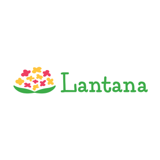
Lantana
-
다양성을 추구하는 것으로 유명한
미국 아동문학
출판사
- 리딩게이트 Milly Molly 등 다수 게재
BRITANNICA
- 백과사전의 대명사 브리태니커
- 리딩게이트 비문학 eBook 다수 게재
귀여운 캐릭터가 주인공인
애니메이션이여서
흥미 UP
알파벳, 파닉스
사이트워드 동요, 챈트까지
기초영어 OK!
학습 액티비티
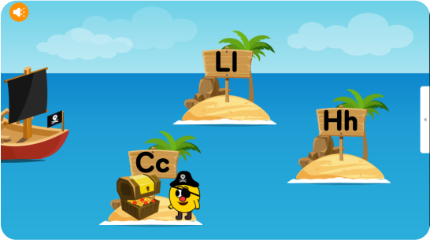
알파벳 학습
사운드를 듣고 빈칸에 맞은 알파벳 찾기
 통문자 학습
통문자 학습
사운드를 듣고 그림에 맞는 단어 찾기
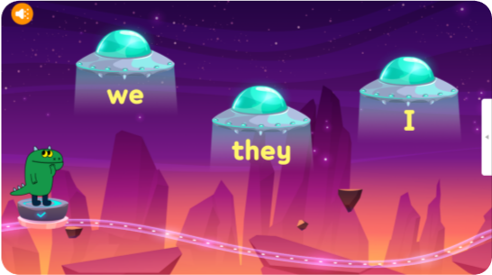
사이트워드 학습
사운드를 듣고 맞는 단어 맞추기
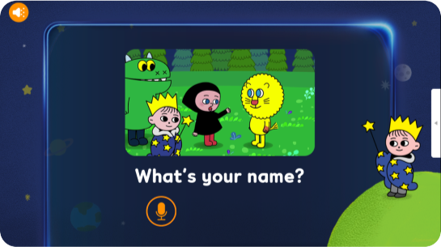
말하기 학습
사이트워드로 구성된 기초문장 듣고 녹음하기
정독을 위한 독후활동
단어를 듣고 알맞은 그림을 찾으며
듣기 집중
훈련을 할 수 있어요.
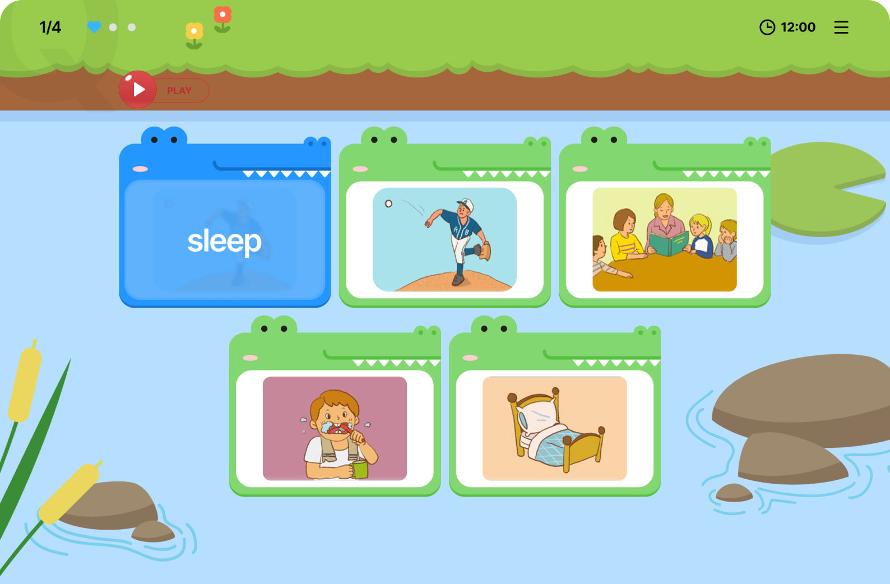
순서에 맞게 단어를 배열하며
알맞은 단어를
찾으며
어휘 학습을 할 수 있어요.
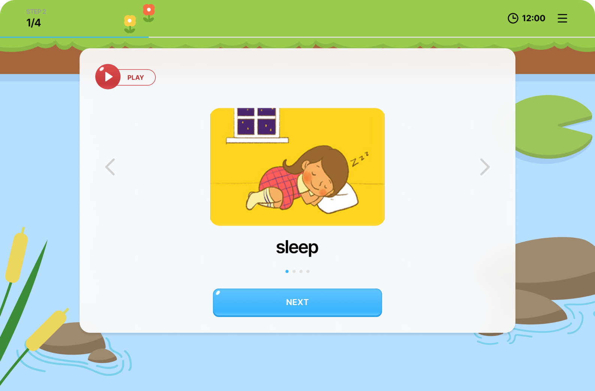
문장에 맞는 그림을 찾으며
문장을 이해하는
훈련을 할 수 있어요.
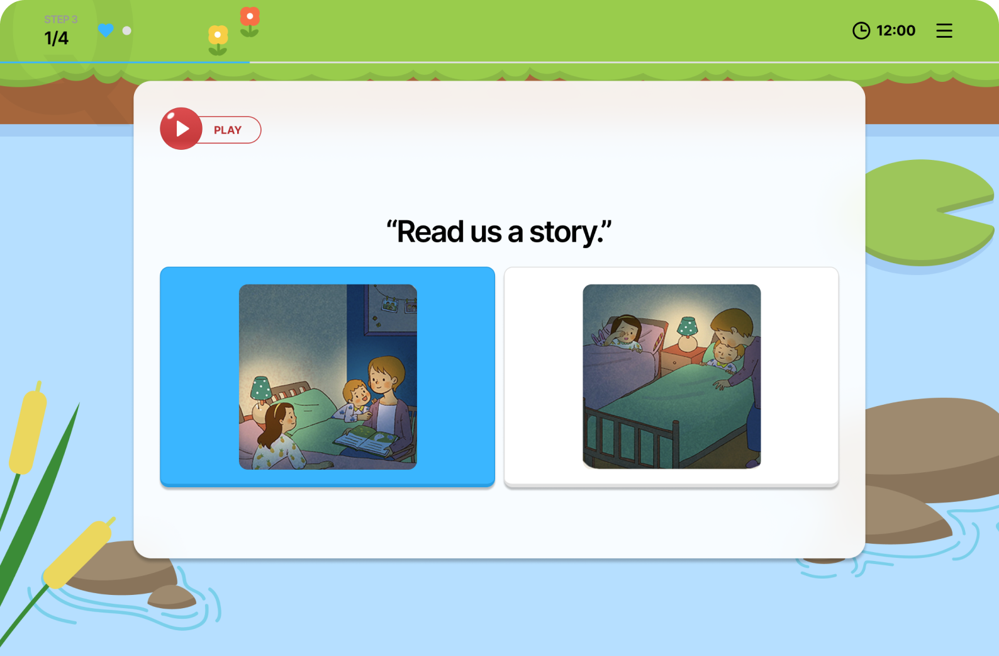
순서에 맞게 단어를 배열하며
문장 만들기 훈련을
할 수 있어요.
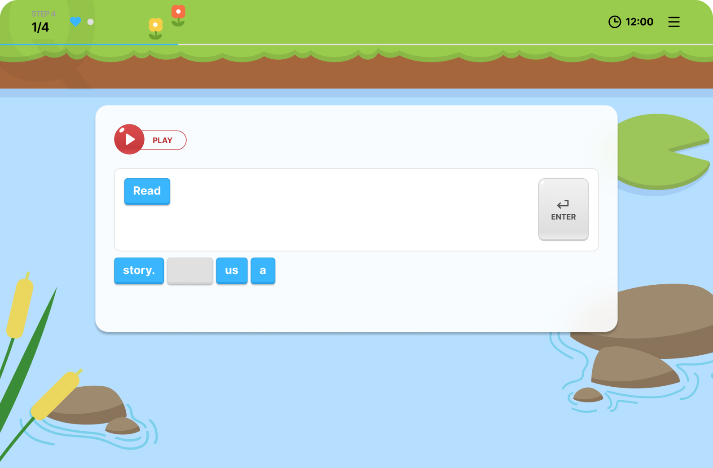
문제를 듣고 알맞은 장면을 고르며
듣기 집중
훈련을 할 수 있어요.
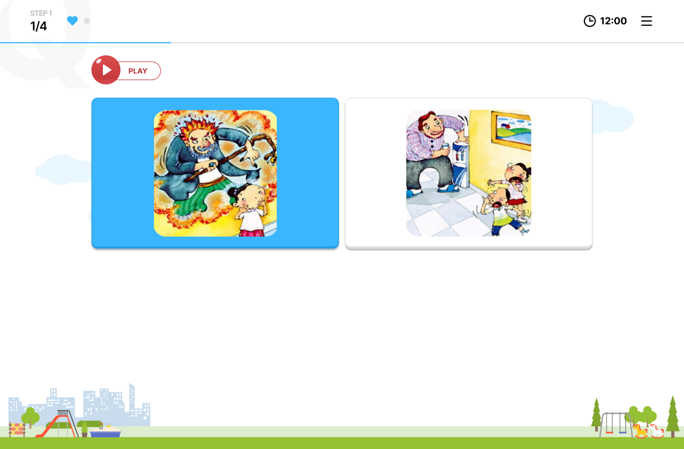
알맞은 단어를 찾으며
어휘 학습을 할 수 있어요.
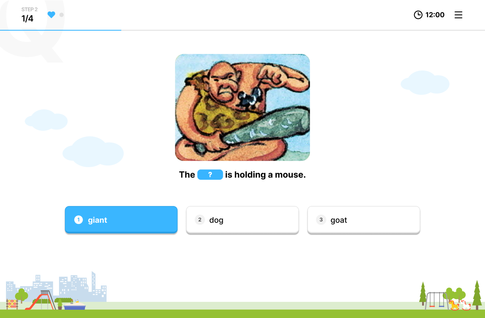
그림을 보고 알맞은 답을 찾으며
문장을 이해하는
훈련을 할 수 있어요.
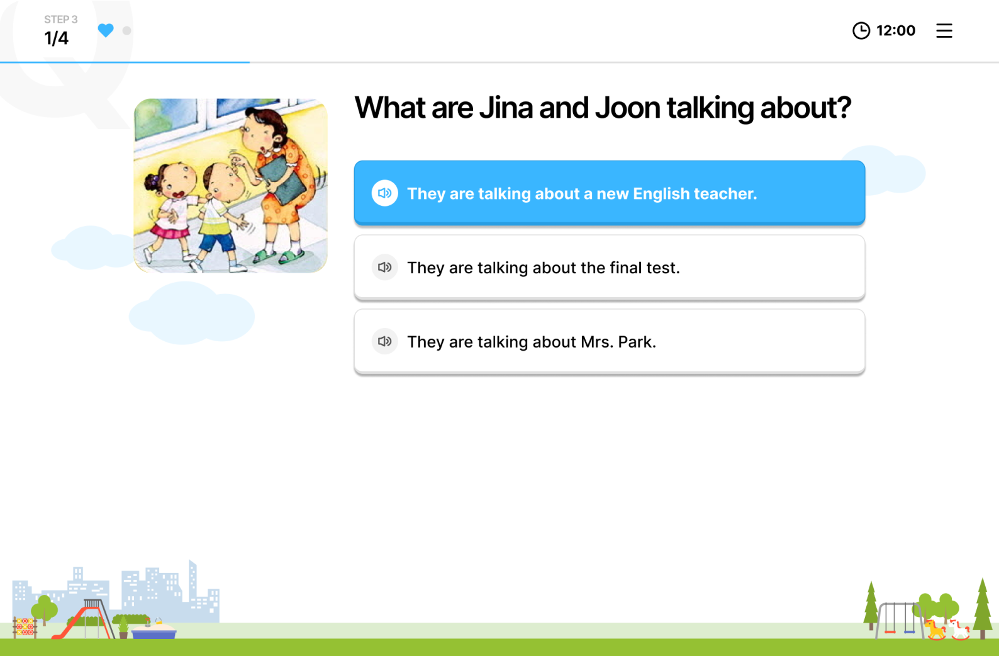
순서에 맞는 문장을 선택하며
스토리 구조화
훈련을 할 수 있어요.
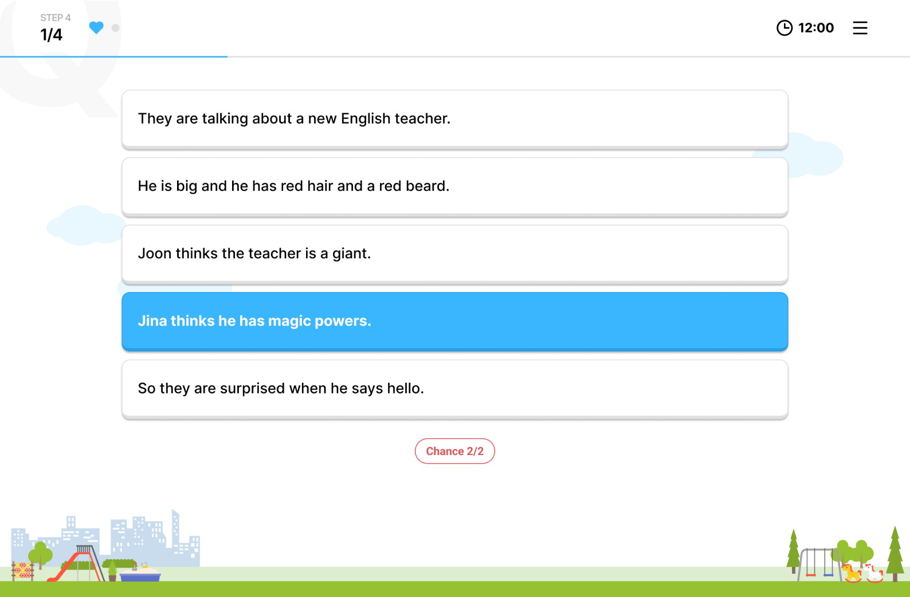
순서에 맞게 단어를 배열하며
문장 만들기 훈련을
할 수 있어요.
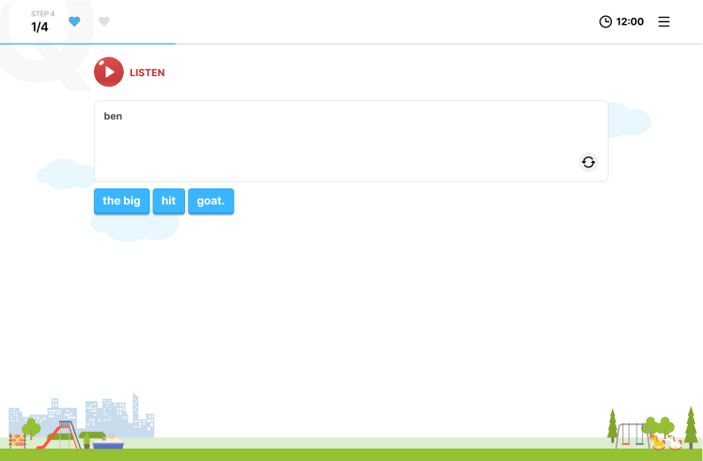
문장을 읽고 알맞은 답을 찾음,
eBook 이해도 점검을 할 수 있어요.

한글뜻에 맞는 영어단어를
직접 타이핑하며 단어
철자까지
학습할 수 있어요.
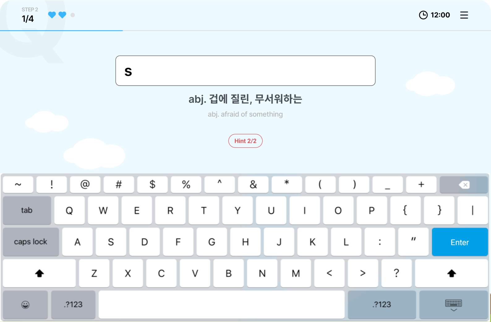
순서에 맞는 문장을 선택하며
스토리 구조화
훈련을 할 수 있어요.
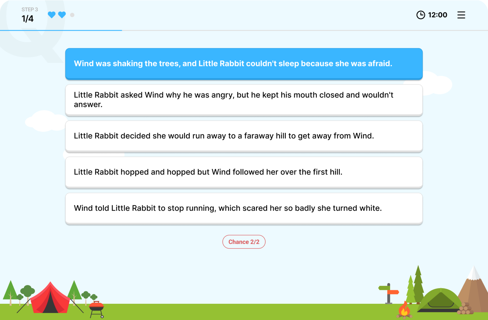
문장을 듣고 빈칸에 알맞은 단어를
직접
타이핑하며, 듣기와 어휘 모두
학습할 수 있어요.
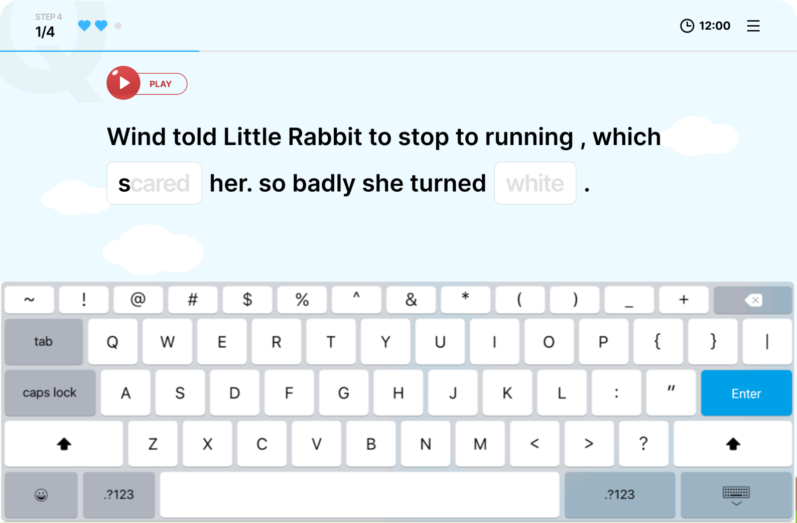
독후 프로그램에서
70점 이상 받아야
학습포인트
가 쌓여요!
pBook quiz
02
아이가 본 다양한 영어원서들 잘 이해했을까?
아서시리즈, 해리포터 등 유명 해외원서 3,000권에 대한 5단계
독후프로그램 퀴즈 제공!
다양한 부가 활동
Movie Book
보고, 듣고, 따라 읽고!
움직이는 영어 도서관
인기있는 eBook 433편을 선정하여
무비북으로 제공하고
있어요!
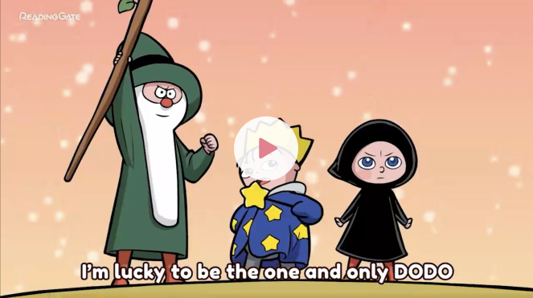
낮은 레벨은 따라 말하고
AI 음성 분석을 받는 기능을
제공하고 있어요.
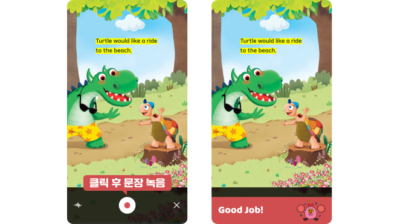
끝까지 책임지는 케어
독서왕 선발대회
정해진 학습일수, 학습포인트를 달성하면
다양한 굿즈 선물을
줘요. (연 2회 )
주간/월간 리포트
아이의 독서활동이
카톡 알림톡으로 와요.
슈퍼스타
영어 말하기 실력을 녹화 후
제출하면 다양한 선물을 줘요. (연
1회)
알림 서비스
주요 학습지표 달성 내역이
카카오 알림톡으로 와요.
레벨마스터
레벨별 정해진 학습을 달성하면
레벨마스터 온라인상장을 줘요!
(상시)
전화상담 서비스
연령별 학습법 등을
자세하게 안내해요. (신청자에 한함)
학습 습관 배지
1일 학습 목표, 연속 학습일수 달성시
온라인 배지와 상장을
줘요. (상시)
제대로 된
학습효과
6가지
-
듣기능력 향상
영어의 시작은 듣기!
DODO ABC콘텐츠(영어동요, 알파벳, 파닉스 학습 애니메이션 및
액티비티)와 만화영화처럼 재밌는 Movie Book, 원어민 음성이
지원되는 eBook을 통해 귀가 트이고 영어 자신감이 생겨요!
-
어휘력 향상
기본 어휘부터
고급 어휘까지!
기본 어휘부터 일상 어휘, 외국 현지에서 자주 사용하는 고급
어휘까지 eBook을 통해 자연스럽게 익히며, 단어장 기능을 통해
한번 더 학습하여 내 것으로 만들 수 있어요!
-
문제해결능력 향상
꼼꼼한 5단계 독후학습!
듣기, 단어, 읽기, 쓰기 훈련은 물론 요약형 문제를 풀며
스토리를 머릿속으로 구조화하고 정독을 하는 습관을 키울 수
있어요!
-
읽기의 기초 완성!
파닉스, 사이트워드를
재밌게
알파벳 음가, 파닉스 규칙은 물론, 자주 사용되어 보는 즉시
통문자로 읽을 수 있는 사이트워드도 학습하여 읽기에 자신감을
키울 수 있어요!
-
문해력 향상
문장을 이해하는 능력!
eBook을 보다가 모르는 단어를 만나도 당황하지 않고 앞뒤 문장과
아는 단어를 활용해 유추해요. 이를 통해 문장을 문장 자체로
이해하는 능력을 키울 수 있어요!
-
영어 말하기 향상
짧고 쉬운 문장부터
말하기
연습!
문장을 듣고 따라 말하는 것에서 끝이 아닌, AI 음성 평가
시스템을 통해 정확히 발음하고 억양도 따라하는 습관을 키워 영어
말하기에 기초를 다질 수 있어요!
(*SPEAK 기능은 도도ABC, KA~1C 레벨만 제공)
제대로 된 생생후기
전체보기
#유아 적응팁
#초등 저학년 적응팁
#초등 고학년 적응팁
#영어에 흥미를 잃은 아이
#엄마표영어 적응팁
#영어독서 습관 잡기
5살 아이! 놀이처럼 했더니
단어가 저절로!
방학때 뭐하지? 영어 어떻게 하지? 고민이었는데 리딩게이트
시작하니 알아서 보고, 문제도 풀어요! 며칠전에는 carry 처럼
다섯알파벳의 단어도 스스로 배열해서 맞추고!
발음도 좋아진 게 눈에 보이더라구요
엄마는 잠시 자유시간 생기고 아이는 즐겁게 영어공부하고
두마리 토끼 다 잡은 셈!
팬더**님
4살 아이! 보고 또 보니
영어로 대답해요!
도도ABC는 반복되는 알파벳이나 어절이 있는게 특징인데요
상황설정이 재미있다보니 아이는 웃으며 같은편을 보고 또
보고 하네요.
그렇게 반복하다 보니 아이가 익숙해 지나봐요!
Who wants some 문장구조가 계속 나오는 콘텐츠를 보고 있길래
아이에게 “who wants some apple?” 하니 “Me! Me!” 라며
문장을 이해하고 영어로 대답해서 깜짝 놀랐어요!
허니*님
아이가 좋아하는
콘텐츠를 마음껏 보며
자기주도학습습관까지!
리딩게이트 앱 틀면 먼저 좋아하는 콘텐츠를 학습하고 싶은
만큼 진행하고 있어요! 아이는 파닉스송을 좋아해서 매일 보고
있네요
그리고 엄마가 읽었으면 좋겠다 생각한 책들은 “to do“
리스트에 넣어두고 자율학습 끝나면 to do 에서 골라서 보고
퀴즈도 풀고 있습니다. 카톡으로 리포트도 오니 엄마도 힘들
내게 되네요! 꾸준함이 주는 아이 자기주도 학습습관 너무
너무 좋네요!
벨라**님
엄마와 함께 목표를 세우고
독후프로그램까지
으쌰으쌰!
엄마와 아이가 함께 얼마나 볼지 목표를 세우고 리딩게이트
캘린더 기능을 활용해 목표 달성여부 확인하며 힘내고
있어요!
K레벨은 짧아서 아이가 읽기에 부담을 느끼지 않고, 내용도
제가 봐도 재미있어서 집중해서 보더라구요. 어떤 날은 3번
반복해서 보기도 한답니다. 그리고 독후프로그램도 푸는데요,
틀릴때도 있지만 끝까지 끈기를 가지고 하는 모습이 너무
기특해 칭찬해 준답니다!
하나**님
수준에 맞는 eBook으로
문제풀이까지 non-stop
리딩게이트는 아이의 레벨을 정확하게 파악했고, 아이의
수준에 맞는 eBook을 알려줘서 아이 스스로 eBook을 읽고
문제풀이까지 해낼 수 있는 것이 장점입니다. 하지만 2단계가
되면 문제가 어려워 위기가 오기도 했습니다.
독후프로그램에서 FAIL이 나와서 눈물 찔끔 흘리며 고생했는데
같은 eBook을 몇번이고 반복하고 나니 그 이후부터는 웬만한
챕터북은 어렵지 않게 읽네요. 리딩게이트 2년 6개월차인 지금
해리포터 원서를 재미있게 읽고 있습니다.
김*아 어머님
학원 도움 없이도
단어, 문제풀기까지 커버 가능!
초4부터 3년간 영어는 학원이나 사교육 없이, 집에서
영어책읽기와 리딩게이트만으로 영어를 공부하고 있습니다.
리딩게이트는 eBook을 읽고 난 후 내용에 대한 이해도를
확인할 수 있는 독후프로그램이 있어서 그냥 책 읽기만으로
아쉬운 점을 보완할 수 있는게 장점입니다.
또 책 속에 있었던 단어들을 리마인드하며 다시 기억할 수
있으며, 문제도 문장 완성형 등 다양한 형태여서, 학습하고
생각을 확장해 갈 수 있도록 해 주는 것이 장점이에요.
김*영 어머님
언어발화가 느렸던 아이
10살인 지금 영어 독립읽기를!
언어발화가 느린 저희 아이는 6살에 영어거부가 심하게
왔어요. 주변에 영유다 뭐다 달리는 친구들 못본 척 하며
리딩게이트를 아이의 속도에 맞게 하나씩 소화했습니다.
처음 1년은 자막없는 무비북으로 등교전 반복해서 보여주고,
자기전에는 eBook으로 다시 보여주되 독후문제를 강요하지는
않았어요. 어느정도 시간이 지나자 스스로 리딩게이트를 틀어
혼자 따라읽고 혼자 웃기도 하더라구요.
10살인 지금 영어 독립읽기를 하고 있어요.
빙글이**님
아이가 먼저 찾는 리게
학습흐름만 따라가면 효과
만점!
아이에게 맞지 않은 영유 선택으로 영어와 담쌓고 1년 넘게
지냈는데, 리딩게이트로 영어와 다시 친해지고 있어요. 집에
오면 아이가 먼저 리딩게이트를 찾는 것이 신기할 따름이에요.
영상을 보면서 음악과 함께 영어를 익히니 효과도 좋고 아이도
좋아하고!
워킹맘이라 엄마표영어는 엄두도 못내었는데, 리딩게이트
보고, 따라말하고, 퀴즈풀고, 학습흐름대로 따라만 했더니
효과 좋네요!
러블**님
리딩게이트 학습흐름을
그대로 따라만 하면 됩니다!
같은 단어가 수없이 반복되어 저절로 외워질 수 밖에 없는
시스템이에요. 독후프로그램의 단어 부분에서 타이핑하고,
뒤에서 테스트 할 때 또 타이핑하고, 이야기 순서대로
배열하고. 이 모든게 시간이 오래 걸리지만 단어와 문장이
계속 반복이 되어서 온전히 자기것으로 흡수하게 되더라구요.
정말 꼼꼼한 프로그램입니다!
8살 KB단계로 시작한 저희 아이는 1년 9개월 어느덧
4단계네요! 이제 논픽션까지 섭렵했습니다!
김*서 어머님
독서왕과 공식카페 프로젝트로
동기부여까지 쉽게 해결
영알못 엄마라 리딩게이트 시작하고 처음에 막막했는데
공식카페 선배맘들이 효과적인 방법을 알려 주셨어요.
낮은 단계(2단계까지)에서는 한번 듣고, 소리내서 따라읽고,
학습뒤에는 다시 복습시간을 가지고. 영상 촬영 좋아하는 딸
수시로 음독하는 영상도 찍고. 이렇게 레벨업 할 때 마다
칭찬해주시는 카페 맘님들 덕분에 더 열심히 했네요!
아이는 리딩게이트 포인트로 레벨업 하면서 성취감을 느끼며
독서왕 대상도 4번이나 받았네요!
이* 어머님
아이의 옆에서 응원하는 것만으로 충분해요!
리딩게이트 독서왕 이벤트를 활용하시길 추천해요.
저희는 독서왕 도전 목표를 아이가 세우도록 했습니다. 그러자
어린이날에도 리딩게이트를 빠지지 않고 보더라구요. 본인
스스로가 매일 해야 하는 이유를 알았기 때문이지요.
저는 아이가 리딩게이트를 할 때 방해가 되지 않도록 티비나
핸드폰을 보지 않고 옆에서 자리를 지켜주는 것, 모르는
단어가 있을 때에는 함께 찾아보는 것뿐이었답니다. 이번에
독서왕 대상으로 영어실력 뿐 아니라 아이의 내면도
성장했음이 느껴지네요.
하* 어머님
루틴이 중요
어느덧 914일 연속학습이에요!
초4 저희 아이는 오늘로 리딩게이트 914일 연속학습했어요!
그 비결은 매일 아침 리딩게이트를 하는 루틴 덕분입니다.
저희 아이는 아침에 일찍 일어나는 편인데요. 그래서 아침에
시간 여유가 있거든요. 여행중에도 연휴에도 아침 기상직후는
늘 있는 법
그래서 매일 하다보니 914일 연속학습과 더불어 영어실력도
커졌어요. 매일 정해진 시간! 루틴의 힘! 함께 느껴보세요!
JJ**님
독서왕이라는 목표를 향해
한팀처럼 달려요!
초등 2학년때 리딩게이트를 시작해 5번의 독서왕을
지나왔으며, 이번에 대상을 받았습니다.
리딩게이트의 장점은 독서왕이에요. 상위 몇 명에게 주는
시스템이 아닌, 목표 점수를 도달하면 모두에게 상을
주거든요.
그래서 남과 비교하지 않고 스스로 세운 목표를 향해 나갈 수
있지요. 도전 기간동안 엄마와 아이가 하나의 목표로 한팀처럼
움직이며 목표를 향해 꾸준히 학습하게 되거든요.
그 결과 아이의 독서력이 강화되었고 이제 아이는 영어와
모국어의 차이가 거의 없는 상태가 되었네요.
신*아 어머님
더 많은 후기 보기